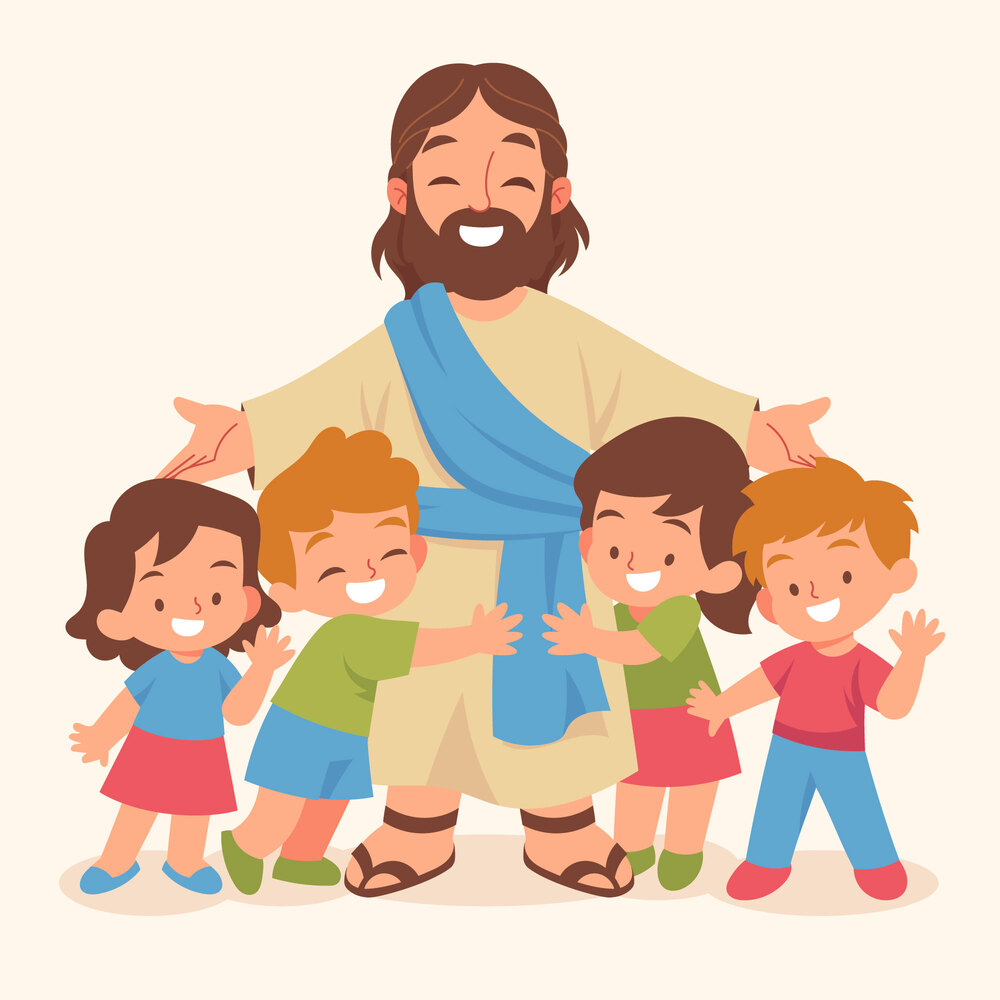
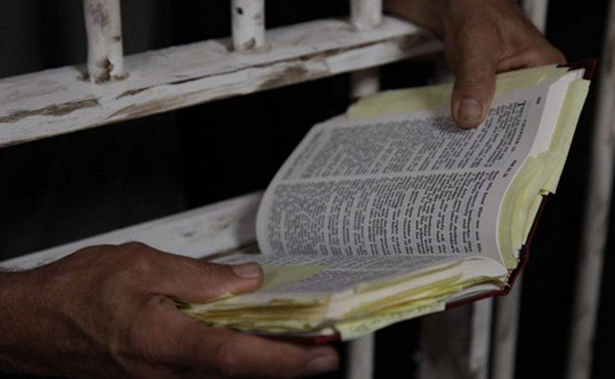

CONECTÁ EN COMUNIDAD

CONOCE NUESTROS ESPACIOS DE CONEXIÓN

Reunión Dominical
Todos los domingos nos reunimos en el templo de la iglesia, en Laprida 143 Oeste, para compartir un tiempo especial de adoración, enseñanza y comunión. Además, El primer domingo de cada mes celebramos la Santa Cena
Horario: 10:00 am - 12:15 pm
Este espacio es para todos y todas, sin importar edad, raza, orientación sexual, ideología o situación social. ¡Vení tal como sos!

Escuela Bíblica
Dios nos ha permitido ser el instrumento a través del cual Él muestra su amor a los niños. Por eso, compartimos lecciones bíblicas para que los chicos puedan conocer sobre la vida de Jesús en un ambiente de compañerismo y amistad.
Grupos:
- Semillitas de Jesús: 4 a 7 años
- Aventureros de la Palabra: 8 a 11 años
- Adolescentes: 12 a 16 años
Horario: Domingos 10:00 AM

Hora Feliz
Descripción de la actividad correspondiente a Hora Feliz.

Linaje Escogido
"Mas vosotros sois linaje escogido, real sacerdocio, nación santa, pueblo adquirido por Dios, para que anunciéis las virtudes de aquel que os llamó de las tinieblas a su luz admirable." — 1 Pedro 2:9
Este versículo es el corazón de nuestro ministerio que destinado para adolescentes de 12 a 17 años, con el deseo de acompañarlos en su crecimiento, ayudándolos a conocer más a Dios y a descubrir su propósito.
Horario: Todos los sábados de 18:00 a 20:15 hs

Corona de Honra
Creemos que la experiencia, la sabiduría y el testimonio de nuestros mayores son un verdadero tesoro para toda la iglesia. Por eso, este ministerio está especialmente pensado para personas a partir de los 60 años.
Tenemos talleres de memoria, arte, lengua de señas, literatura, telar y gimnasia, donde cada encuentro es una oportunidad para aprender, compartir historias, fortalecer vínculos y seguir dejando huellas de fe y amor.
Horario: Martes a las 18:00 hs
Jóvenes
Descripción de la actividad correspondiente a Jóvenes.

Madres unidas en oración
El ministerio de Madres Cristianas está formado por mujeres de diferentes denominaciones que nos unimos con un mismo propósito: orar por nuestros hijos, confiando en el poder de Dios y Su dirección para sus vidas.
Nuestras reuniones siguen cuatro pasos: alabanza, confesión, agradecimiento e intercesión.
El grupo principal se reúne los miércoles a las 15 hs en la iglesia, y también hay reuniones en casas. Consultá para más información a la hermanas Mariela Ivanchi y Maricel Chuck . ¡Te esperamos!

Reunión de Oración
La oración es nuestra conexión directa con el Padre, es un momento para poner en sus manos todo lo que somos y dependemos completamente de Él.
Jesús nos enseñó a orar como algo esencial, y nos dejó la última lección sobre la oración antes de ser entregado: "Velad y orad, para que no entréis en tentación; el espíritu a la verdad está dispuesto, pero la carne es débil." — Mateo 26:41
Horario: Miercoles a las 20:00 hs
Matrimonios Jóvenes
Descripción de la actividad correspondiente a Matrimonios Jóvenes.
Matrimonios mayores
Descripción de la actividad correspondiente a Matrimonios mayores.
Ropero
Descripción de la actividad correspondiente a Ropero.
MINISTRA EN COMUNIDAD

Hora Feliz

Lazos
de Amor

Granero

Librería

Ministerio Carcelario